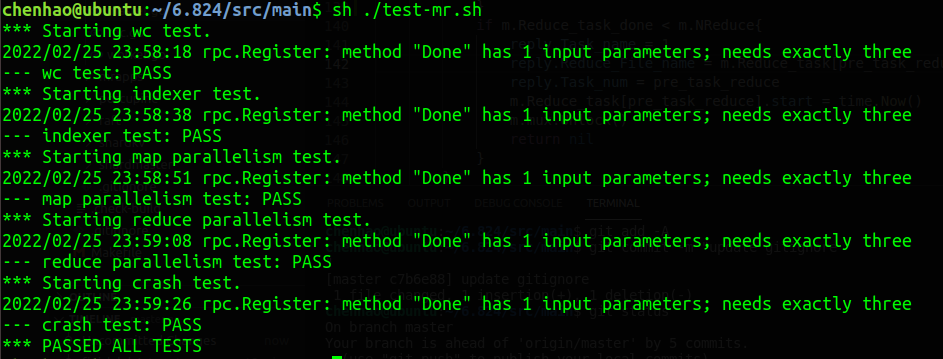

MIT6.824Lab1
1、实验一主要就是自己实现一个简单的MapReduce，以及设计RPC接收和返回的结构体；
该MapReduce的任务是统计文件中各单词出现的次数。
MapReduce分成Maste节点和worker节点，worker节点负责Map和Reduce的处理，Master节点负责Map和Reduce任务的分配，并需要保存记录任务的分配处理情况。
Map和Reduce函数在wc.go文件中实现，需要将其编译成链接文件（go build-buildmode=plugin ../mrapps/wc.go） ，供后续使用。
1 | func Map(filename string, contents string) []mr.KeyValue { |
2、Master和Worker节点
Master节点
Master完成初始化之后，就启动一个新的go程，利用RPC进行监听;Worker节点
Worker完成初始化之后，便利用RPC向Master节点请求任务，完成任务之后，再次利用RPC通知Master节点。所有的Worker节点都重复此过程，直到Master回复所有任务完成，Worker节点结束进程。
- Master结构体
1
2
3
4
5
6
7
8
9
10
11
12
13
14
15
16
17
18
19
20
21
22
23
24
25
26
27
28
29type task_map struct{
task_name string
state int
start time.Time
}
type task_reduce struct{
task_name []string
state int
start time.Time
}
type Master struct {
mux sync.Mutex
// Your definitions here.
Map_task []task_map //The file that Map task need to process
Map_task_num int //The num of Map task
Map_task_assign int //The num of Map task that has assigned
Map_task_done int //Wheather all Map task is done
NReduce int //The num of Reduce task buckets
Reduce_task []task_reduce //The all file that Reduce task need to process
Reduce_task_assign int //The num of Reduce task that has assigned
Reduce_task_done int //Wheather all Reduce task is done
Job_finish bool //Wheather all task finished
ans []KeyValue //The results of MapReduce task
}
3、实验结果
第一个实验相对来说是比较简单的，需要修改的文件只有master.go, worker.go, rpc.go, RPC的使用也给出了例子，Map和Reduce函数的调用也给出了例子。
除此之外，任务运行过程中还用到的库有strings，strings.FieldsFunc(contents, ff)可以将strings分割成单词组；json库，json.Encoder能够将key/value变成json文件，json.Decoder能够将json文件变成key/value对；
实验通过截图

4、并发和容错
在Lab的实现过程中主要需要考虑两件事，一个是节点出错如何处理，另一个是多节点的并发问题；
容错
对于第一个问题，我们在分配任务时，保存了每个任务被分配的时间，当发现有处理中的任务已经处理了很长时间还没反应，则需要将该任务重新分配给其他节点，并重置该任务的被分配时间。并发
对于第二个问题，利用sync.Mutex给Master节点加锁，后续所有读取修改master节点状态是，都需要首先获取master节点的锁（mux.Lock()）， 返回时需要释放对应的锁（mux.Unlock()）。